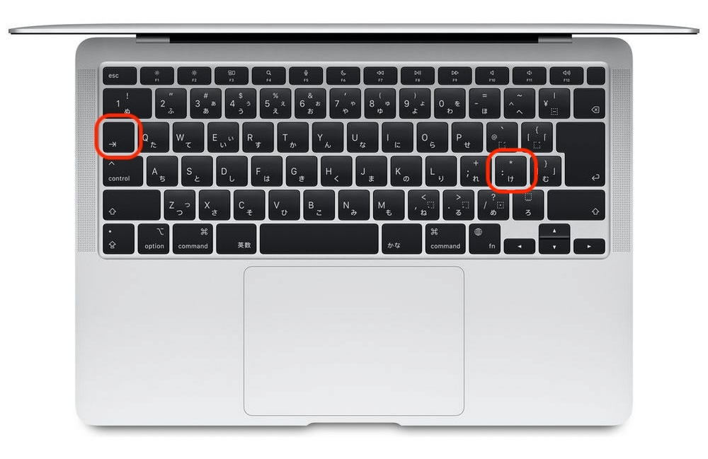

3. 条件分岐（if文）#
出席パスワード：875309
到達目標
if文を理解し，条件に応じて処理を分岐できるようになる．
準備
anacondaを使用し，jupyter labを起動する．
Document（書類）/Freshフォルダを開き+をクリックして新しいノートブックを作成する．ファイル名を
3_{学籍番号}_{氏名}.ipynbに変更する．例：3_SI25999_香川渓一郎.ipynb
3.1. 導入（第2回の復習）#
変数と型：
int,float,str,bool算術演算子：
+ - * / // % **文字列操作：
+（結合），*（繰り返し），f-string（f"{...}"）入出力：
int(),float()で型変換
Note
第2回 課題3 - 解答例
target = "ピカチュウ（ポケットモンスター）"
weight = 6.0
height = 0.4
BMI = weight / height ** 2
print(f"{target}のBMIは{BMI}です．")
3.2. 制御構文#
制御構文：プログラムの実行の流れ（処理の順番）を制御するための文．
分岐：条件によって実行する処理を分けたい（例：「合格」か「不合格」）
反復：同じ処理を繰り返したい（例：データの集計）
中断：エラーが起きたときに別の処理をしたい（例：入力ミス対応）
書き方のルール
文の末尾にコロン（
:）を付ける．インデント（字下げ）でブロック（処理の範囲）を表す．
インデントはTabを入力して使う．

※ Mac book air 商品紹介画像
3.2.1. フローチャート#
フローチャート：アルゴリズムの処理の手順を表す．
基本要素

これらの要素を矢印で結合し，矢印の向きによって処理の流れを示す．
3.3. 条件分岐（if文）#
条件を満たすかどうか（真か偽か）によって，指定の処理をするかどうかを決定する．
bool型の値を用いる．比較演算子によって条件を表す．
論理演算子によって複数の条件を組み合わせる．
比較演算子
演算子 |
意味 |
例 |
結果 |
|---|---|---|---|
|
等しい |
|
True |
|
等しくない |
|
True |
|
より大きい |
|
True |
|
より小さい |
|
True |
|
以上 |
|
True |
|
以下 |
|
False |
論理演算子
演算子 |
意味 |
例 |
結果 |
|---|---|---|---|
|
両方TrueならTrue |
|
True |
|
どちらかTrueならTrue |
|
True |
|
真偽を反転 |
|
False |
3.3.1. 基本形（インデントに注意）#
x = 10
if x > 5:
print("5より大きいよ")
if 条件:の行末はコロン:「条件」が
Trueのときだけ，下のインデントされたブロックを実行する．
3.3.2. if-else#
ifの条件が
Trueのとき，直下のブロックを実行する．Falseのとき，else:以下のブロックを実行する．
x = -3
if x >= 0:
print("非負")
else:
print("負")
3.3.3. if-elif-else（多分岐）#
ifの条件が
Trueのとき，直下のブロックを実行する．Falseのとき，次のelifの条件を判定しTrueのとき，直下のブロックを実行する．Falseのとき，以下同様．
score = 85
if score >= 90:
print("A")
elif score >= 80:
print("B")
elif score >= 70:
print("C")
else:
print("D")
Note
演習1
次のコードを実行すると，A，B，C，Dのどれが出力されるかを確認せよ．
score = 85
if score >= 90:
print("A")
elif score >= 80:
print("B")
elif score >= 70:
print("C")
else:
print("D")
Note
演習2
好きな年齢 age を与え，年齢が
75歳以上なら「後期高齢者」
65歳以上なら「高齢者」
18歳以上なら「成年」
18歳未満なら「未成年」 と表示するプログラムを書け．
age = {好きな値を入力}
if age >= 75:
print("後期高齢者")
{続きを記入}
3.3.4. 比較と論理（条件式の書き方）#
boolを利用
比較演算子：
== != > < >= <=論理演算：
and（かつ） /or（または） /not（否定）連鎖比較：
0 <= x < 10は(0 <= x) and (x < 10)と同じ意味
age = 19
student = True
if 18 <= age < 20 and student:
print("大学生年齢帯かつ学生")
Note
演習3
整数 n が与えられたとき，n が 偶数かつ 3 の倍数 なら「OK」を表示するプログラムを実装せよ．
n = 346
if {条件を記入}
print("OK")
3.3.5. 真偽と「真とみなす／偽とみなす」値（Truthiness）#
Pythonでは次のものは偽と評価される：
0,0.0,"",[],{},Noneそれ以外は真と評価される．
name = ""
if name:
print("名前あり")
else:
print("未入力です")
3.4. 入力の検証（try/except と if の併用）#
例外的な手続きが発生した場合の処理．
s = input("整数を入力: ")# inputでキーボードからの入力値を変数に代入する
try:
n = int(s)
if n % 2 == 0:
print("偶数")
else:
print("奇数")
except ValueError:
print("整数を入力してください")
3.4.1. ガード節（早期リターンの発想）#
入れ子が深くなるのを避けるため，先に不適切条件をはじく書き方（読みやすさ向上）．
score = int(input("0〜100の点数: "))
if not (0 <= score <= 100):
print("範囲外です")
else:
# ここに正しい処理
print("OK")
3.4.2. ネストと可読性（ifの中のif）#
ネスト：ある構文（文やブロック）の中に、さらに別の構文を入れ子状に書いた構造．入れ子の数が多いほど「ネストが深い」と表現する．
深いネストは読みづらい → 条件の整理・早期リターン・elif の活用で改善する．
悪い例（深いネスト）
if cond1:
if cond2:
print("OK")
良い例（条件の連結による浅いネスト）
if cond1 and cond2:
print("OK")
3.5. ありがちなエラーと対策#
症状 |
原因 |
対策 |
|---|---|---|
|
インデント不一致 |
ブロック部分を適切にインデントしているか |
何も表示されない |
条件が常にFalse |
条件式を |
代入と比較を混同 |
|
比較は |
無限に入力を求める |
例外未対応 |
|
3.6. 課題#
Note
演習4
うるう年は次のルールに基づいて決められる．これを元にyearの年が「うるう年」かそれ以外の「平年」かを出力するプログラムを実装せよ．
4で割り切れる年はうるう年
ただし100で割り切れる年は平年
ただし400で割り切れる年はうるう年
year = 2025
if {条件を記入}:
print("うるう年")
else:
print("平年")
Note
おまけ（時間が余った人）
整数 n が与えられたとき，n が 3の倍数または3のつく数字 ならその数字に「!!!」をつけて表示するプログラムを実装せよ．
例：n=3なら3!!!，n=4なら4，n=13なら13!!!
ヒント：文字列sに特定の文字"a"が含まれているかを判定するには"a" in sとすれば良い．
3.7. まとめ#
if / elif / elseで条件に応じた処理の分岐ができる．比較・論理演算子で条件式を作る／連鎖比較が読みやすい．
入力検証は
try/except＋ifの併用が基本．可読性を意識してネストを浅く保つ（ガード節・
elif）．
3.7.1. if文のテンプレート#
# 典型テンプレ
if 条件A:
# Aのとき
elif 条件B:
# Bのとき
else:
# それ以外
# ガード節（早期終了）
if 不適切条件:
処理中止や警告
else:
正常処理
3.7.2. 予習#
「Pythonで始めるプログラミング入門」3章を読んでおくこと．